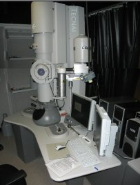
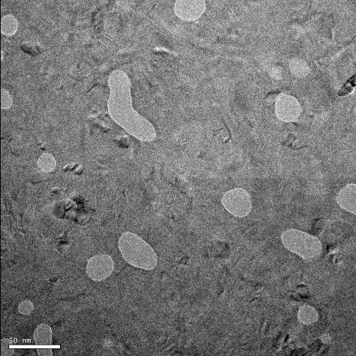

R. W. Gray
OPT 307/407
April, 2009
A Transmission Electron Microscope (TEM) was used to image multiwall carbon nanotubes on a porous polysilicon substrate.
The size (area) of the pores and the outer diameter of the nanotubes were determined using the image analysis tools in ImageJ.
Image pairs were collected and used to create anaglyphs and stereo images which, when viewed with special glasses, produce 3D images. Such 3D images can provide important information about a sample which a flat 2D image can not provide.
Colorization of the images, including the stereo image pairs, was performed in an attempt to enhance viewing the images.
A Tecnai G2 TEM with STEM ability was used for the imaging of the multiwall carbon nanotubes on a porous polysilicon substrate.

Figure 1. The TEM.
The multiwall carbon nanotubes where obtained from Aldrich (677248-5G). A small portion was mixed in isopropanol to dilute the nanotubes.
The porous polysilicon substrates (approximately 15 nm thick) were obtained from SiMPore. (See the website http://www.temwindows.com/.)
Figure 2. Samples (black dots)
of porous polysilicon.
A pipette was used to place a small drop of the isopropanol with the nanotubes onto the porous polysilicon substrate. A paper towel was used to wick away the droplet leaving a small residue on the polysilicon. The samples where then dried with a can of air.
The TEM was used to produce grey-scale images like the one shown in Figure 3.
Figure 3. A multiwall carbon nanotube and pore
in the polysilicon substrate. (Scale bar is 5 nm.)
ImageJ, an image processing and analysis program available from http://rsbweb.nih.gov/ij/, was used to determine the size (area) of the pores and the outer diameter of the nanotubes.

Figure 4. Left: TEM image of porous polysilicon substrate.
(Scale bar is 50 nm.)
Right: ImageJ identification of the pores.
The measured pores ranged in size from 95 nm2 to 1,623 nm2 with an average value of 410 nm2. (A circle having an area of 410 nm2 would have a diameter of about 22.8 nm.) Figure 5 is a graph of the measured pore sizes.
Figure 5. The pore sizes measured with ImageJ.
The TEM was switched into scanning TEM (STEM) mode and a polysilicon substrate was imaged. The resulting images have black colored pores which makes it easier to setup ImageJ's particle analysis tool.
Figure 6. Left: STEM image of porous polysilicon substrate.
(Scale bar is 500 nm.)
Right: ImageJ identification of the pores.
The average pore size was determined to be 385 nm2, which is reasonably close to the 410 nm2 value previously measured.
The complete range of pore sizes measured is shown in the following graph.
Figure 7. The pore sizes measured with ImageJ.
The diameter of the nanotubes measured ranged from about 10 nm to about 19 nm. The suppliers of the nanotubes labeled the bottle as being nanotubes with a diameter ranging from 10 nm to 15 nm.
Figure 8. Measuring the diameter of a nanotube using ImageJ.
(Scale bar is 5 nm.)
Figure 9. Diameters of nanotubes.
By tilting the sample with respect to the imaging electron beam direction, pairs of images were collected. These image pairs were then combined to produce 3D images using two different methods: 1) Anaglyphs for red/cyan tinted glasses, and 2) JPS stereo pairs for dual LCD glasses.
Several tilt angles were attempted ranging from 3 degrees to 10 degrees. No one tilt angle worked consistently well. In addition to the sample holder drifting after tilting, returning the sample holder to its original untilted position did not produce the same image as the original untilted image. This may be due to the nanotubes moving as a result of interactions with the (charged) imaging beam.
An anaglyph consists of two overlapping images having opposite color hues. One image is taken from a slightly different point of view with respect to the other. (In this case, the sample was tilted with respect to the imaging beam.)
The most common colors used are red [RGB=(255, 0, 0)] and cyan [RGB=(0,255,255)], although other colors have been used.
Figure 10 shows original grey-scale TEM images of a collection of nanotubes.
Figure 10. TEM images of nano-tubes.
Right: Sample tilted by 7°.
(Scale bar is 50 nm.)
The images were colored ...
Figure 11. Red and cyan tinted images.
(Scale bar is 50 nm.)
and combined as shown in Fiugre 12. (Details are provided here.)
Figure 12. The resulting anaglyph.
(Use tinted glasses to see the 3D effect.)
To see the 3D effect, special tinted glasses are needed, matching the colors used to create the anaglyph image. (Try it!)
Figure 13. Anaglyph glasses.
From:
http://www.rainbowsymphonystore.com/3dglasses.html
As can be seen when using the tinted glasses, some of the nanotubes are standing up off of the substrate. Such information about the sample could not have been obtained from a single original TEM image.
A jps stereo image pair is a single jpg file containing adjacent images, one to be viewed with the left eye and one to be viewed with the right eye.
Figure 14. Example of a single jps image file containing
left and right image pairs.
The viewing of the image is accomplished by using special viewing glasses. The VuzixTM iWear® VR920 glasses and accompanying software were used for this project. The glasses contain two separate LCD displays. The viewing software takes the jps image file and displays the left half of the image to the right eye while the right half of the image is displayed to the left eye.
Figure 15. VR920 glasses from Vuzix Corp.
From:
http://www.vuzix.com/iwear/products_vr920.html
Details for using the VR920 glasses, as well as detailed steps for creating the jps image pairs from the TEM images, are provided here.
One advantage that the VR glasses approach has over the anaglyph approach is that the VR glasses do not depend on the coloring of the image to produce the 3D visual effect. This means that the color aspects of the image are much better with the VR glasses than with the anaglyph colored lens. (Of course, this doesn't help you to color the TEM images!) The down side to the VR glasses approach is that the image files are twice as big as the anaglyph files. And if you want to add coloring to an image, you would have to color two images.
Some of the TEM images were colored in an attempt to enhance the viewing of the 3D images.
In an attempt to reduce the work required to color a jps image pair, only the left half of the image had colored (red) nanotubes. The resulting color of the nanotubes when viewed with the VR920 glasses were appropriately red. However, this approach did not work in general for other jps images.
Figure 16. Coloring nanotubes in left half of a jps image pair.
In general, both halves of the jps image had to be colored in the same (or similar) way to produce a colored image when viewed with the VR920 glasses.
Figure 17. Coloring both image pairs.
Unfortunately, the resulting colored images did not produce as clear 3D images of the nanotubes as the uncolored, grey-scale images. Perhaps if the edges of the nanotubes could be automatically detected a better result than the freehand approach could be produced.
The TEM was used to image porous polysilicon substrates and multiwall carbon nanotubes.
The STEM imaging mode provided images that were easier to analysis with ImageJ as this mode produced black colored pores. It was found that the pores in the substrates have an average size (area) of about 400 nm2 and have a wide range of sizes (from about 20 nm2 to about 1616 nm2).
The diameters of the carbon nanotubes were measured and found to be between about 10 nm and 19 nm.
By collecting image pairs, 3D images were formed.
It was often hard to see any 3D effect with the images collected. This was due to the nanotubes moving during adjustments of the sample's angle with respect to the incident electron beam, which frequently made the required alignment of the images impossible.
The Vuzix VR920 LCD glasses provided the best (clearest) viewing of the 3D images, although the setup of the software to run the glasses was problematical.
Comments